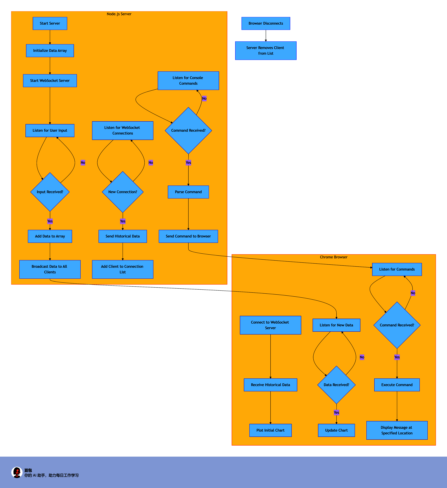
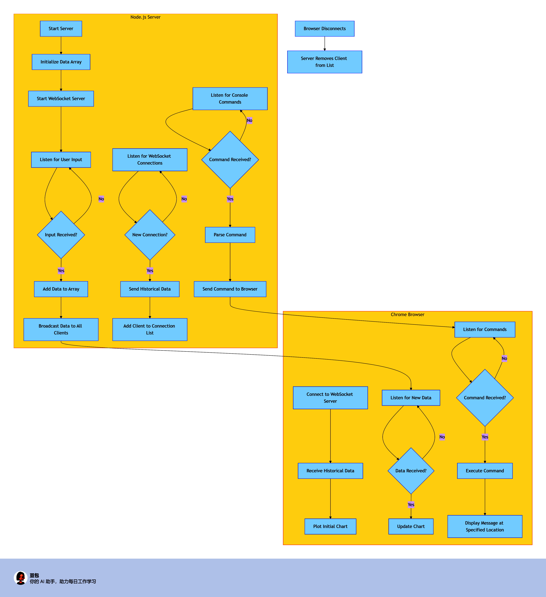

Node.js & Chrome Data Flow Chart
For creating flowcharts, it's generally better to use specialized tools like Microsoft Visio, Lucidchart, draw.io, or similar flowchart-specific software.


System Overview: This flowchart illustrates the interaction between a Node.js server and a Chrome browser for data visualization and command execution. The system supports:
- Server-side data collection and storage in an array
- Real-time data plotting in the browser
- Historical data transmission on reconnection
- Console command issuance to control browser display
flowchart TD
subgraph "Node.js Server"
A[Start Server] --> B[Initialize Data Array]
B --> C[Start WebSocket Server]
C --> D[Listen for User Input]
D --> E{Input Received?}
E -->|Yes| F[Add Data to Array]
F --> G[Broadcast Data to All Clients]
E -->|No| D
H[Listen for WebSocket Connections] --> I{New Connection?}
I -->|Yes| J[Send Historical Data]
J --> K[Add Client to Connection List]
I -->|No| H
L[Listen for Console Commands] --> M{Command Received?}
M -->|Yes| N[Parse Command]
N --> O[Send Command to Browser]
M -->|No| L
end
subgraph "Chrome Browser"
P[Connect to WebSocket Server] --> Q[Receive Historical Data]
Q --> R[Plot Initial Chart]
S[Listen for New Data] --> T{Data Received?}
T -->|Yes| U[Update Chart]
T -->|No| S
V[Listen for Commands] --> W{Command Received?}
W -->|Yes| X[Execute Command]
X --> Y[Display Message at Specified Location]
W -->|No| V
end
Z[Browser Disconnects] --> AA[Server Removes Client from List]
G --> S
O --> V